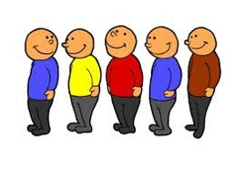

Анна Шавурська
Анна Шавурська, QAP INT
var button = document.getElementById('myElement');button.onclick = function() {console.log(‘Hello world’);};
- Це функція, яка викликається тоді, коли виникає подія.
Ім'я обробника: on + назва події
Недолік: лише одна функція-обробник.
Переваги:
target.addEventListener(type, // string - event name without onlistener, // functionuseCapture // boolean);
var btn=document.getElementById('myBtn');btn.addEventListener('click', function(){alert(this.id);}, false);btn.addEventListener('click', function(){alert('Hello world!');}, false);
btn.onclick = null;target.removeEventListener(type, listener, useCapture);
var div = document.getElementById('div');var listener = function (event) {/* do something here */};div.addEventListener('click', listener, false);div.removeEventListener('click', listener, false);
Функція-обробник виконується в контексті елемента, до якого прив'язаний обробник (this вказує на цей елемент).
var div = document.getElementById('div');var listener = function (event) {/* do something with event */};div.addEventListener('click', listener, false);div.removeEventListener('click', listener, false);
event.bubblesevent.cancelableevent.currentTargetevent.defaultPreventedevent.eventPhaseevent.targetevent.timeStampevent.typeevent.isTrusted
var event = new Event('build');elem.addEventListener('build', function (e) { ... }, false);elem.dispatchEvent(event);
var timeoutID = window.setTimeout(func,delay,[param1, param2, ...]);
var intervalID = window.setInterval(func,delay,[param1, param2, ...]);
of code that should be executed the next time the process is idle
Timers work with this queue by inserting code when a particular amount of time has passed.